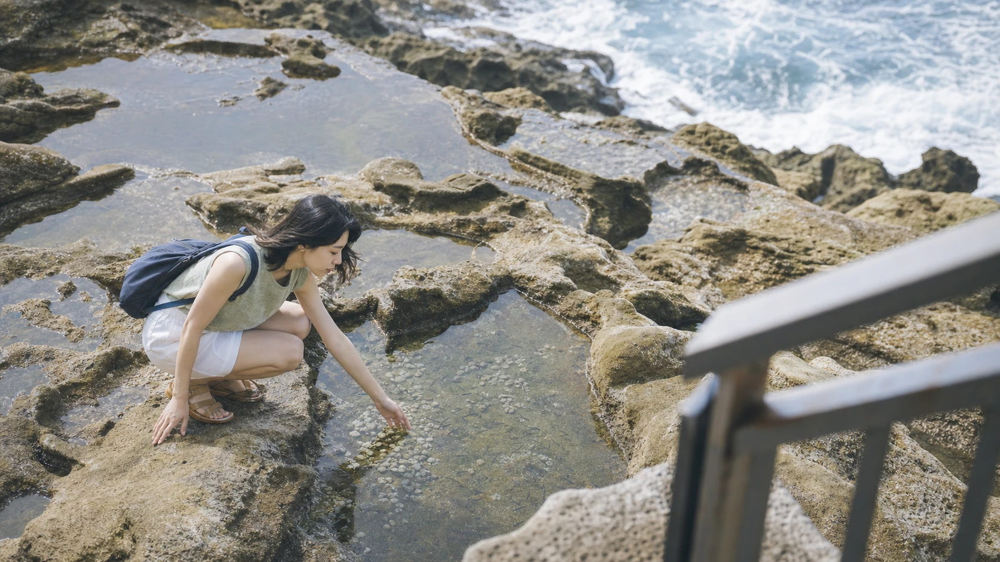
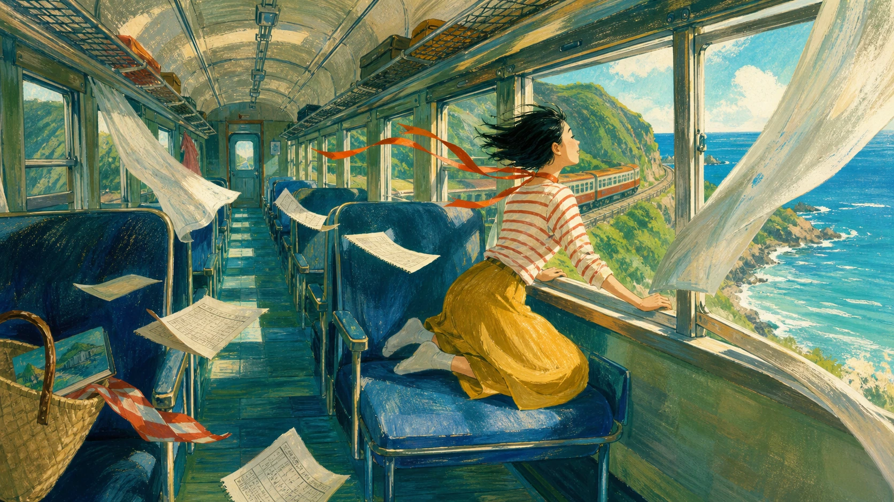
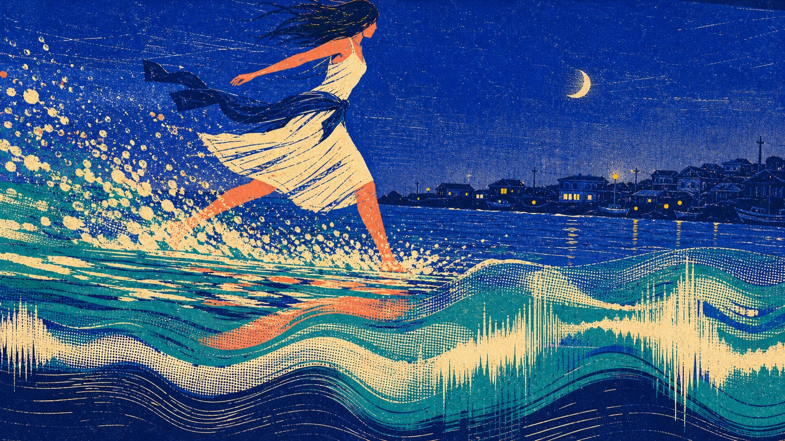

夏天真正開始的時候，城市裡沒有任何特別的聲音。
冷氣機沿著牆面滴水，便利商店的玻璃門反覆開合，機車從巷口一輛接著一輛駛出去。太陽很早便照上對面的屋頂，柏油路逐漸升起一層透明的熱氣。公車停靠、離站，行人站在騎樓的陰影裡等紅燈，所有事情都按照熟悉的速度進行。
就在這樣一個普通的早晨，她帶著不多的行李，搭上了往海邊的車。袋子裡只有薄外套、耳機、一瓶水和沒有讀完的書。沒有詳細的行程，也沒有預先查好的景點。車票是在出門後才買的，目的地則是一個從車站走出去就能看見海的小鎮。
車離開市區以後，窗外的建築慢慢變矮。高架橋消失在後方，招牌變少了，屋頂之間開始出現稻田、山壁與大片沒有名字的綠色。偶爾經過一座小站，月台上只有幾張長椅，幾個人站在陽光下，等一班還沒有出現的車。
海最初只露出很小的一角。它從兩棟房子中間閃過，又被樹木和隧道遮住。下一次出現時，藍色已經比先前更寬，沿著鐵軌向遠方延伸。列車轉過山腳，整片海終於從車窗外展開，日光落在水面上，像有無數細小的玻璃碎片被風推向岸邊。
耳機裡播放著〈想去海邊〉。吉他和鼓聲混在車輪規律的震動裡，沒有蓋過沿途的聲音。歌曲並不急著把夏天說成一段盛大的故事，只是陪著列車穿過隧道、山谷和靠海的聚落。某些沒有被安排好的期待，也跟著旋律慢慢醒來。
抵達以前，海邊剛下過一場短暫的雨。車站外的路面仍然濕著，屋簷一滴一滴落水。雲層尚未完全散開，光從灰白色的縫隙間穿過，照在低矮的屋子和傾斜的電線上。空氣裡有泥土、海水與被雨淋濕的植物氣味。
她沿著小路往海岸走。愈靠近海，風便愈大。轉過最後一排房屋後，沙灘突然出現在眼前。沒有遮陽傘，沒有密集的人群，也沒有色彩鮮豔的商店，只有雨後寬闊而安靜的海岸。
濕沙映著天空，遠處的山被薄霧遮去一部分。海浪帶著灰藍色，一層一層向岸邊靠近。每一道浪都推得不遠，碰到沙灘後便迅速散開，留下一圈白色的泡沫。泡沫停留幾秒，又隨著退潮消失。
她脫下鞋，赤腳走進靠近水線的地方。第一道浪碰到腳背時，冷得讓人縮了一下。水很快退去，細沙從腳底被帶走，身體微微向下陷。下一道浪來得更高，衣角沾上一點海水，顏色變得深了一些。
沙灘上留下兩排清楚的腳印。風吹過水面，也吹過岸邊成片的草。回頭時，最早留下的腳印已經被潮水帶走，只剩下靠近身後的幾個。海沒有替任何人保存經過的證明，卻也沒有否定曾經有人沿著這裡走過。
陽光逐漸從雲層後面露出來。海的顏色開始變亮，水面從灰藍轉為接近天空的淡青色。遠方偶爾有一艘船經過，小得只剩下一個移動的黑點。岸邊沒有廣播，也沒有催促時間的鐘聲，只有浪反覆抵達，又反覆退回去。
她在沙灘上走了很久。有時靠近海水，有時繞到長滿草的高處。沒有急著抵達哪裡，也沒有刻意停下來拍照。這段路不需要被整理成完整的紀錄，它只是夏日裡一段緩慢移動的時間。


接近中午時，雲層已經散得很薄。她離開海灘，沿著原來的小路走回車站。車站旁的販賣部賣著冰水、汽水和幾種簡單的零食。玻璃冰櫃的門一打開，冷氣與白霧一起湧出來。她拿了一瓶汽水，瓶身很快凝滿細小水珠。
午後的月台幾乎沒有人。幾株九重葛從站房旁邊伸出來，花瓣在陽光下顯得很亮。軌道沿著海岸延伸，另一邊便是毫無遮擋的海。只要坐在長椅上，就能看見浪從遠處排成整齊的線，抵達岸邊後再一條一條消失。
一班舊列車從彎道出現。車身在陽光下顯得有些褪色，經過月台時帶起一陣混著鐵軌氣味的熱風。幾扇車窗裡閃過乘客的臉，很快又被速度帶走。列車離開後，軌道仍然輕微震動，細小的聲音留在空氣裡，過了一會兒才完全停止。
月台重新安靜下來。汽水裡的氣泡不斷向上升，碰到瓶口便消失。她把冰涼的瓶子貼在膝邊，望著軌道另一側的海。沒有查看下一班車的時間，也沒有急著決定接下來要去哪裡。
這個下午像是從日常裡多出來的部分。城市裡的工作、訊息和行程仍然存在，只是暫時留在很遠的地方。海風穿過月台，吹動襯衫的袖口，也把九重葛最外側的花枝推向鐵軌。遠處偶爾傳來漁船的引擎聲，聲音很輕，很快便被浪蓋過。
歌曲又播放了一次。同一段旋律經過不同的風景，聽起來也有了不同的顏色。早晨在車上時，它像一場臨時決定的出發；坐在月台以後，旋律變成一段不需要立刻結束的停留。
太陽逐漸向西邊傾斜。月台柱子的影子被拉長，落在水泥地面上。原本白得刺眼的天空開始出現淡淡的灰藍色，海面也不再那麼明亮。她喝完最後一口汽水，把空瓶放進回收箱，沿著車站後方的道路往港口走。
路邊有曬著漁網的矮牆，也有窗戶敞開的老房子。電風扇在屋裡慢慢轉動，收音機傳出模糊的人聲。幾隻貓躺在沒有陽光的牆角，聽見腳步後只抬了一下頭。
防波堤在小鎮的另一端。抵達港口時，天空已經接近黃昏。灰色水泥一路伸向海中央，盡頭立著一座不高的燈塔。兩旁的海色不同，一側是港內平靜的水面，另一側則有較明顯的浪。幾名釣客分散站著，身旁放著水桶、折疊椅和沉默的收音機。
她沿著防波堤緩慢往前走。夕陽藏在低低的雲後，只露出一層柔和的金色。光落在海上，被浪切成不規則的碎片。走到一半時，身後的小鎮已經變得很遠。房子縮成一排低矮的輪廓，車站和沙灘都看不見了。
燈塔在天色變暗以前亮了起來。那束光並不強，只在逐漸加深的空氣裡穩定地存在。每隔一段時間，它便掃過海面，照亮很小的一部分水域，然後轉向另一邊。
她在防波堤盡頭停下來。海風比午後更涼，衣服上還留著淡淡的鹽味。遠方的船隻開始點燈，幾個橘黃色光點分散在海面上。浪拍打消波塊，聲音比沙灘上的浪更低，也更沉。
沒有任何特別的事情在這一刻發生。沒有煙火，沒有盛大的落日，也沒有某個人突然從遠處出現。一天只是在海邊慢慢經過，從雨後的沙灘、午後的小站，走到黃昏的防波堤。
然而正因為什麼都沒有發生，時間才顯得格外完整。早晨離開城市時，夏天只是窗外一片短暫出現的藍。此刻海已經環繞在四周，風從很遠的地方吹來，帶著白天留下的熱度，也帶著夜晚即將抵達的涼意。

歌曲快要結束時，她重新按下播放。海面上的光愈來愈淡，遠處的燈塔亮了起來。天色仍然一點一點變暗，最後一班回程列車也不會因為有人捨不得而晚些出發。
她轉身往回走。走過釣客身旁，走過被夕陽曬過一整天的水泥堤岸，也走過自己剛才留下的影子。燈塔的光從身後掃來，短暫照亮白色衣角，下一秒又回到海面。
港口的路燈已經亮起。小鎮裡傳來晚餐的氣味，老房子的窗戶一扇一扇出現暖光。路邊的貓換了位置，收音機仍播放著聽不清楚的節目。海在房屋後方看不見的地方繼續起伏，聲音卻始終跟著風穿過街道。
回到車站時，月台上的九重葛只剩下深色輪廓。她坐在下午停留過的長椅上，腳邊放著沾了沙的鞋。列車還沒有進站，軌道安靜地伸進夜色裡。白天喝過的汽水、走過的海灘和防波堤盡頭的燈塔，都已經留在幾公里之外。
衣服上仍有海風的味道。月台廣播響起後，遠處出現兩道逐漸靠近的車燈。鐵軌開始震動，列車從黑暗中駛來，停在海與小鎮之間。
車門打開，她提起鞋和袋子，走進亮著白光的車廂。列車離站時，海最後一次從窗外出現。夜色已經蓋住大部分水面，只剩幾艘船的燈在遠處微微晃動。
那片海沒有替這一天留下結論。夏天也沒有因此變得特別漫長。只是從這一天以後，每當那首歌再次播放，雨後的濕沙、午後空蕩的月台、瓶身上的水珠，以及黃昏防波堤上的風，都會跟著旋律一同回來。
像一張沒有寫下地址的明信片。
沒有要寄給誰。
只替那個夏天，保留了一小片海。